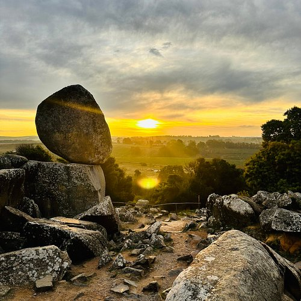
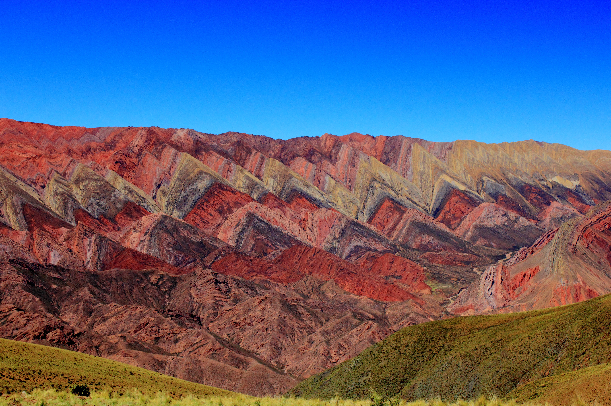

Tandil
Ciudad serrana en el corazón de Buenos Aires. Famosa por sus sierras, la Piedra Movediza, productos regionales como quesos y salamines, y una excelente propuesta de turismo aventura.
📄 Descargar itinerarioExplorá los paisajes más imponentes de Argentina, entre sierras, cerros y la cordillera de los Andes.

Ciudad serrana en el corazón de Buenos Aires. Famosa por sus sierras, la Piedra Movediza, productos regionales como quesos y salamines, y una excelente propuesta de turismo aventura.
📄 Descargar itinerario
Villa de montaña en la Patagonia, a orillas del lago Lácar. Un destino de ensueño rodeado de bosques, con el cerro Chapelco para esquiar en invierno y senderos para recorrer en verano.
📄 Descargar itinerario
Pueblo histórico en la Quebrada de Humahuaca, Patrimonio de la Humanidad. Sus cerros de colores, la cultura andina, los mercados artesanales y la gastronomía norteña lo hacen único.
📄 Descargar itinerario